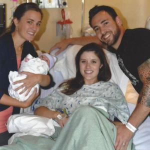

About Me
"The soul can never be cut to pieces by any weapon, nor burned by fire, nor moistened by water, nor withered by the wind" - Krsna, Bhagavad Gita As It Is
-
-

Om baby doula Philosophy
Mothers are the center and power source of every birth. My job is to make sure that power shines through. I strive to help families make informed choices and become active participants in their birth experience. Birth experiences belong to the families. If I have helped a family learn about their options, given families humble support, and empowered them to make THEIR OWN decisions, then I have done my job. I support families of all forms, and believe that every woman has the right to be given the support she desires during her birth experience.
-

Certifications
I am currently certifying with ICEA.
I have been trained in comfort measures, yoga, and the use of rebozos and essential oils
I have an A.A. in Humanities as well as my B.S. in Biology and minor in Chemistry. My understanding of anatomy and physiology help me to better understand the birthing process.
I am a licensed early childhood teacher. This is a definite bonus when working with families as a sibling doula.
I have been trained in First Aid, CPR, and Universal Precautions. -
About Me
I grew up on a farm on Whidbey Island in Washington state. I am one of seven children. Birth was an aspect of life that I got to see first hand in nature, and on the farm. Needless to say, birth was always presented to me as a normal part of nature. As I got older, I loved supporting family members and friends in their birth journeys. When I realized this was something I could do as a profession I was ecstatic. I have found that women show their true strength and are deeply in tune with their instincts during labor. I love being a support for these magnificent women as they create their own miracles. I have been practicing yoga since childhood, and am always continuing my education. My education in biology and chemistry, along with my understanding of natural living and holistic health, allow me to have a unique and valuable perspective on birth and women's health.
-
Testimonials
"Right away I knew that Laura loved being a Doula. She is very knowledgeable, sweet and really looks out for the mom. I had the best experience with her. She made me feel so strong, confident, and comfortable during labor. She's very encouraging. I still brag about her when I tell my labor story with others! If in the future I become pregnant again, she will be the first one I call! She is FANTASTIC!"
""